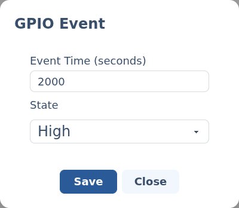

GPIO events.
A GPIO event switches an output on or off at a point on the timeline. Add GPIO events to a GPIO channel to drive relays, LEDs, smoke machines and other simple on/off loads.
§Add a GPIO event
Add a GPIO channel to your script (see Scripting animations), then click its track at the time you want the output to change. The GPIO event editor opens.
§The editor

- Event Time (seconds) — where on the timeline the output changes.
- State —
Highdrives the output on,Lowdrives it off. The output holds that state until the next GPIO event on the same channel.
i
Also drives Maestro output channels
A Maestro channel configured as an Output
(rather than a Servo) uses this same editor — High and Low map to the
Maestro's full-high and full-low positions.
Back to Scripting animations.